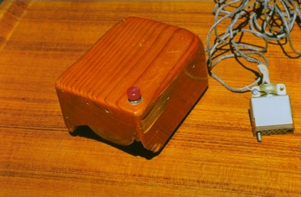
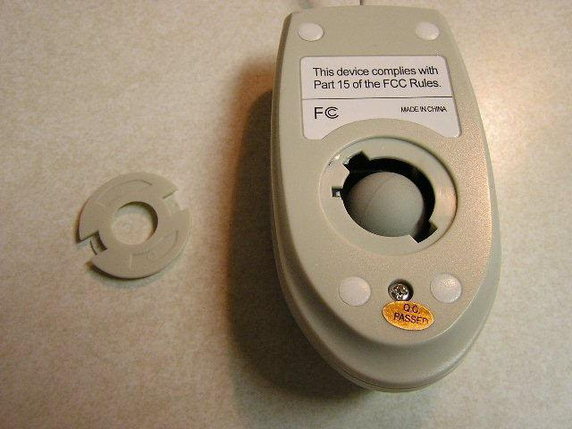
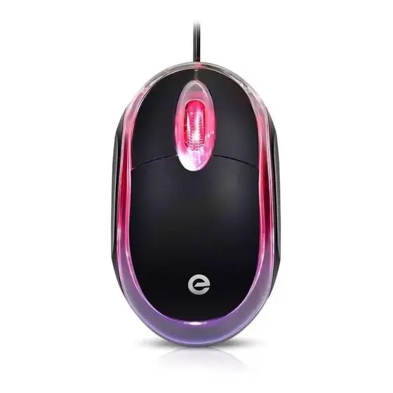
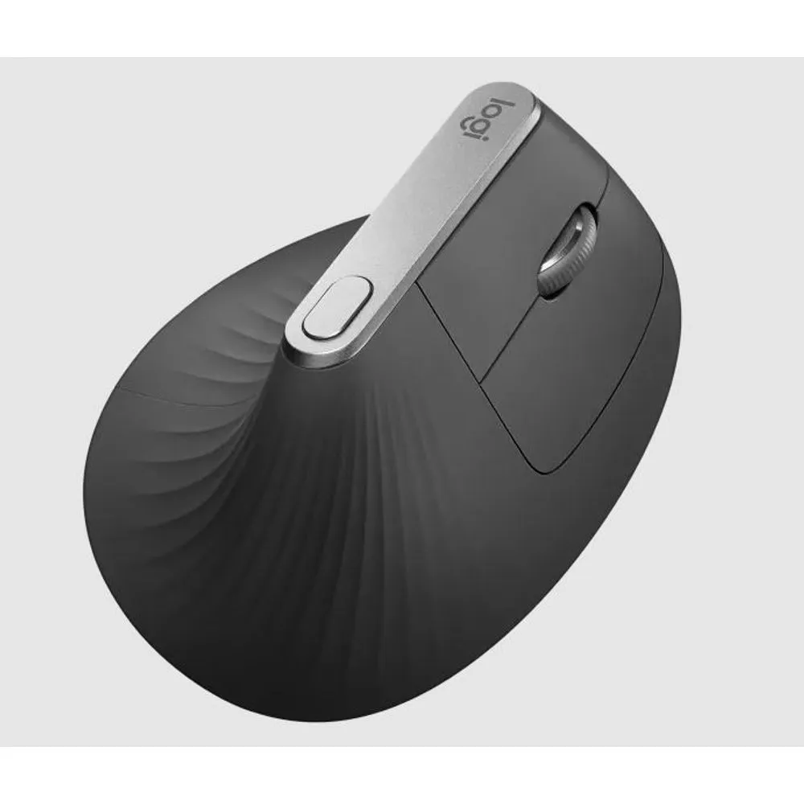

O Início de Tudo
Criado por Douglas Engelbart, o primeiro "mouse" era uma caixa de madeira com duas rodas metálicas. Ele foi apresentado como um "Indicador de Posição X-Y para um Sistema com Display", revolucionando a ideia de interação gráfica.
A Era da Bolinha
Os mouses se popularizam com a introdução da esfera mecânica. Essa bolinha rolava sobre a superfície e girava dois roletes internos para rastrear o movimento. Quem não se lembra de ter que abri-lo para limpar a sujeira acumulada?
A Revolução Óptica
A Microsoft lança o IntelliMouse Explorer. O sensor óptico substitui a bolinha, usando um LED e uma câmera para capturar milhares de imagens por segundo. O resultado? Mais precisão, menos manutenção e o fim dos mousepads obrigatórios.
Laser, DPI e o Mundo Gamer

A tecnologia a laser aprimora ainda mais a precisão, funcionando em praticamente qualquer superfície. O universo gamer impulsiona a inovação: DPIs ajustáveis, botões programáveis e iluminação RGB se tornam o padrão para a alta performance.
O Futuro na Palma da Mão
Mouses sem fio com performance igual ou superior aos com fio, sensores com dezenas de milhares de DPI, designs ultraleves e ergonomia avançada. A busca pela latência zero e pela personalização total continua a definir o futuro deste dispositivo essencial.